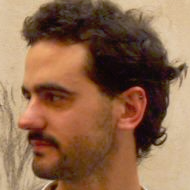

Team
Este proyecto me permite englobar los conocimientos que adquirí a partir de mi formación como Ingeniero Industrial, con otro mundo que me apasiona, la música.
Mis principales intereses son la música y la linguística. Además de tocar el acordeón, siempre me atrajo la simplicidad de los instrumentos de percusión de mano.

Cuando no estoy programando, me gusta cocinar, jugar al fútbol y visitar el mar. Soy uno de los creadores de Popcorn Time.
Soy economista, docente y músico. CaxixiMidi me permite conjugar mi encanto por la matemática, la lógica, los desafíos y el trabajo en grupo.
- Nico
- Martin
- Gonza
- Emi